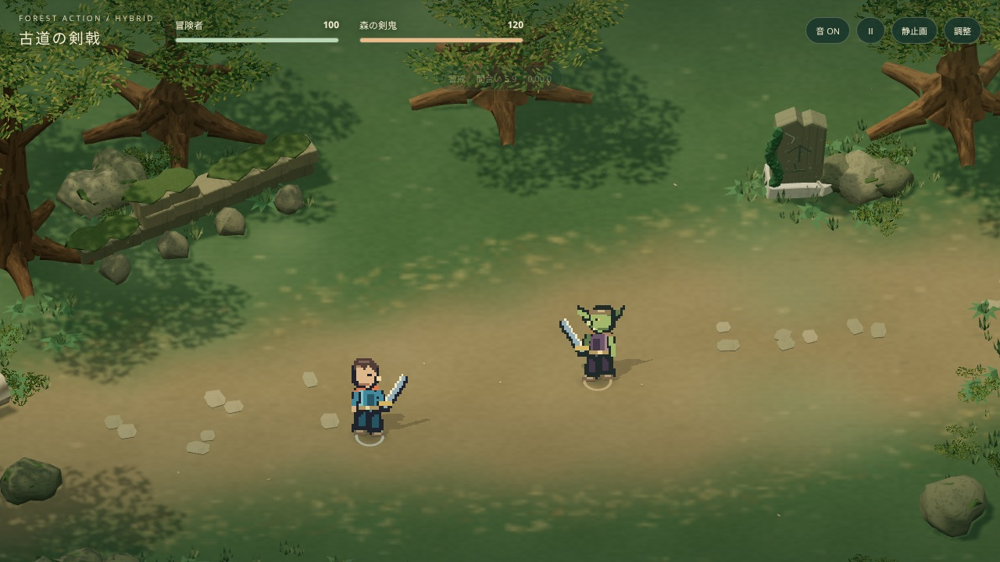
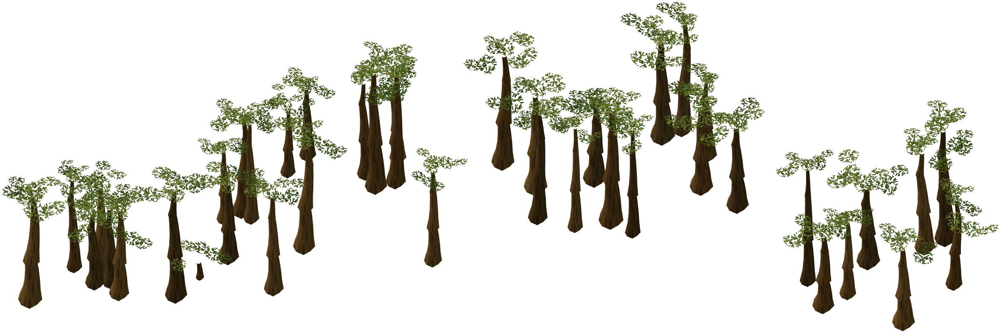
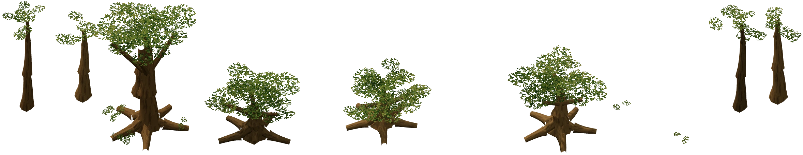
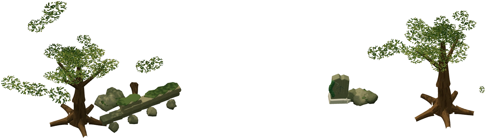
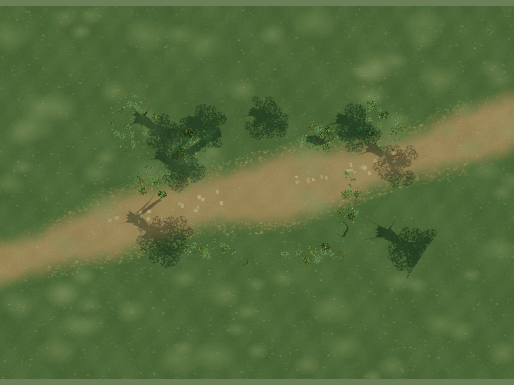
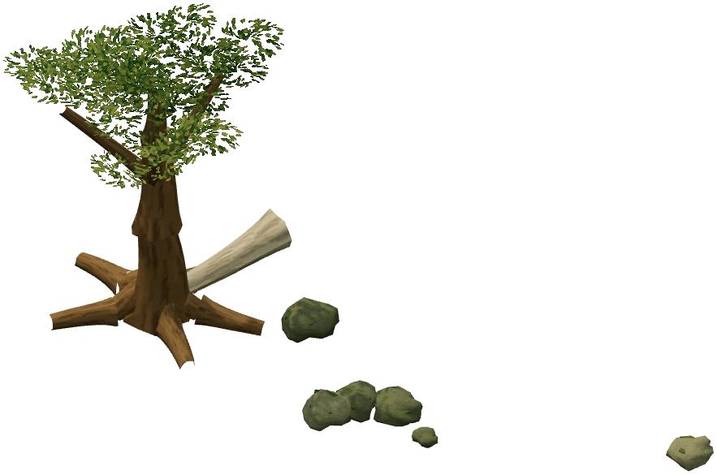
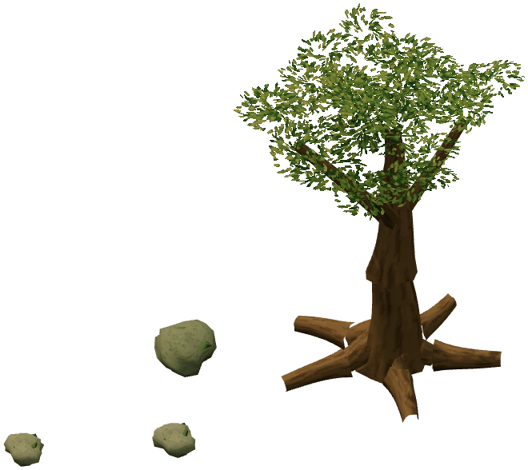
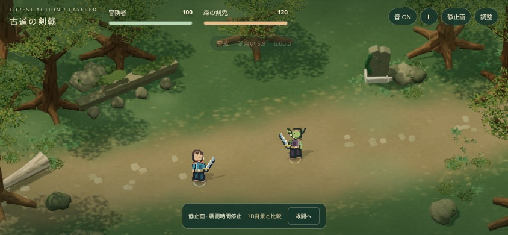

FOREST ACTION / BACKGROUND STUDY同じ古道を、違う背景方式で。
キャラクター、カード、操作、敵AI、攻防判定は共通。現行の森から光と質感を画像に焼き込み、地面＋5枚の透過背景で再構成しました。背景を作るための元3Dモデルは、擬似3D版の実行時には読み込みません。

現行：3D背景＋ドット絵キャラクター 試作：擬似3D背景＋同じキャラクター
試作：擬似3D背景＋同じキャラクター同じ1280×720、俯角43°、ズーム1.23、開始位置、HP100/120、戦闘時間0。静止画モードで撮影。揺れと風は停止、UIも同じ配置です。
4つの役割・6枚の素材
| 役割 | 構成 | 奥行き |
|---|
| 遠景 | 奥の森／後方の樹木 | Z −19、−10.3 |
| 中景 | 石碑・石垣・岩・倒木・中距離の立木 | Z −5.5 |
| 地面 | 古道・土・草・石畳・落ち葉・焼き込み影 | 平面XZ、66×49.5 |
| 前景 | 左・右の樹木、枝、葉 | Z 3、4 |

遠景
後方の森
中景
地面
左前景
右前景空間を感じさせる工夫
世界座標の異なる奥行きへ透過板を配置するため、カメラ追従時に自然な視差が生まれます。追加視差とごく小さな前景揺れ、木漏れ日の明度変化、12点の浮遊粒子を加えています。足元の接地影とキャラクターの投影影はリアルタイムのまま。前景が人物に重なる場合は薄くなり、敵の予備動作を守ります。

モバイル横画面相当：844×390量産のための評価
実行時の背景は6枚の画像と6枚の平面だけです。固定俯瞰の戦闘場なら、構図と描き込みを画像へ集約し、少ない奥行き設定でシーンを追加できます。ただし今回の素材は既存3D森から焼き出したものです。新しい森の素材制作が完全に不要になるわけではなく、最初からレイヤーを描く制作工程の検証は次の段階です。
弱点は大きな俯角変更や視点回転への対応、立体物の側面、動的な背景照明です。現在の43°の固定方向に最適化しています。樹木の影と遠景の霞は画像へ焼き込まれているため、影設定は人物の投影影、霞設定は遠景の色調に作用します。
ブラウザのモバイル表示検証は実施。iPhone Safari実機での品質・速度・発熱は未検証です。